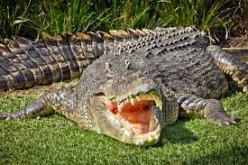
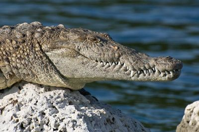
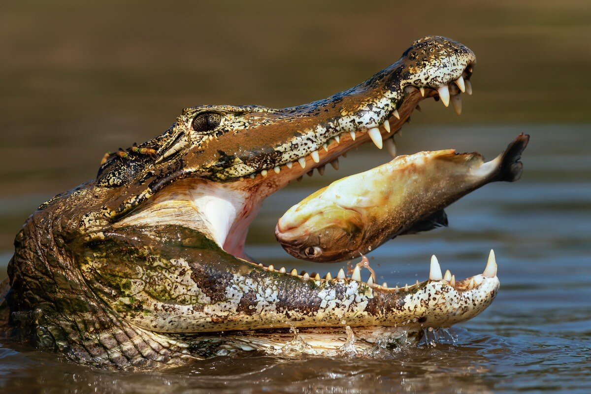
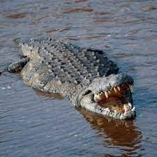
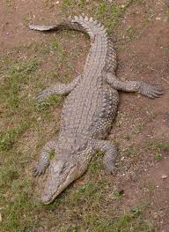
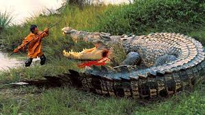
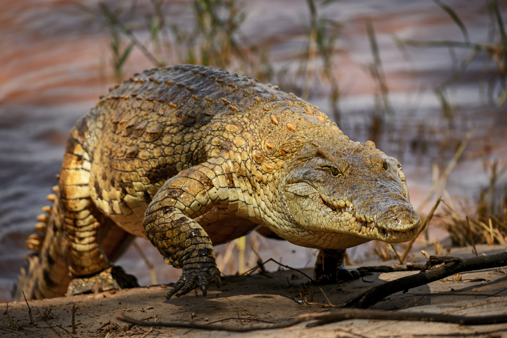
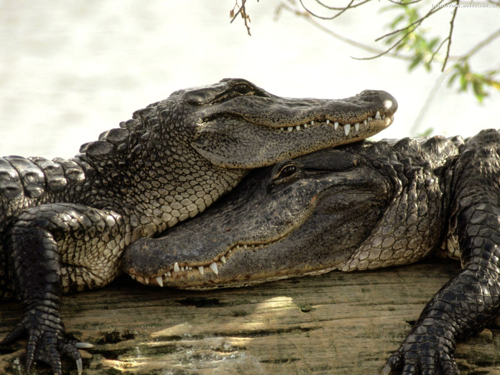

|

Adaptações para o ambiente terreste:Informações sobre suas adaptações para o meio terrestre |

|

|
|

|

|

|
|

Informações sobre seu organismoInformações sobre: Sistema respiratório, Sistema circulatório, Sistema nervoso |

|
Reino: Reptillia |
Filo: Chordata |
Classe: Répteis |
Ordem: Crocodylia |
Família: Crocodylidae |
A principal característica distintiva dos tetrápodes diápsidos é a presença de duas aberturas (fenestras temporais) em cada lado do crânio por trás dos olhos. Os diápsidos vivos são os crocodilos, lagartos, serpentes, tuataras e aves.[104] As características que distinguem os arcossauros doutros diápsidos estão na presença de um par extra de aberturas no crânio (Fenestra anterorbital) na frente das cavidades oculares. Archosauria é o grupo coroa que contém o ancestral comum mais recente dos crocodilos e aves e todos os seus descendentes. Compreende os pseudossúquios (Pseudosuchia, os "falsos crocodilos") e os Ornithosuchia, que por sua vez compreendem os dinossauros e os seus parentes, os pterossauros e as aves. Pseudosuchia define-se como o grupo dos crocodilos vivos e todos os arcossauros mais estreitamente relacionados com os crocodilos do que com as aves. Acredita-se que a separação entre pseudossúquios e aves ocorreu perto da grande extinção do Permiano-Triássico. Os crocodilos modernos perderam as fenestras anteorbitais, porém estas estavam presentes na maioria dos seus ancestrais fósseis na forma de pequenas aberturas. Os crocodilomorfos são os únicos pseudossúquios que sobreviveram à grande extinção do Triássico-Jurássico há 201,3 milhões de anos. Durante o inicio do Jurássico, os dinossauros tornaram-se dominantes em terra, e os crocodilos sofreram uma grande diversificação adaptativa para preencher os nichos ecológicos que acabaram por desocupar os grupos recentemente extintos. As evidências fósseis que foram aparecendo indicam que os crocodilomorfos do Mesozoico tinham uma diversidade muito maior de formas do que os crocodilos modernos. Alguns converteram-se em pequenos insectívoros mais velozes, outros em piscívoros especializados, e outros em carnívoros marinhos e terrestres, e alguns converteram-se em herbívoros. A etapa inicial da evolução dos crocodilos consistiu no aparecimento dos protossúquios, que evoluíram no Triássico tardio e início do Jurássico. Foram seguidos pelos mesossúquios, que se diversificaram muito durante o Jurássico e o Terciário. Outro grupo, os eussúquios, surgiu no Cretáceo tardio, há 80 milhões de anos, e compreende todos os crocodilos hoje vivos.
O crocodilo-do-nilo (Crocodylus niloticus) é uma espécie de crocodilo africano, cuja distribuição se estende desde a bacia do Nilo às regiões a sul do deserto do Saara a Madagáscar e ao arquipélago das Comores.
Esses répteis são carnívoros com grande poder de predação. A principal fonte alimentar dos crocodilos-do-nilo são os peixes, no entanto, eles podem se alimentar de praticamente tudo que consigam pegar. Durante os primeiros anos de vida, os juvenis podem começar se alimentando de pequenos invertebrados aquáticos e logo passando para peixes. Já os adultos possuem uma vasta gama de presas, podendo capturar grandes vertebrados, incluindo: impalas, gnus, zebras, búfalos e até mesmo hipopótamos jovens. A cauda possui musculatura extremamente forte e desenvolvida, utilizada para nadar e auxiliar na propulsão do animal ao atacar uma presa. O formato das mandíbulas, largas e robustas, auxilia o crocodilo a segurar a presa, impedindo que a mesma faça movimentos laterais que facilitem a sua escapada. Após capturadas, as presas são esmagadas pelas poderosas mandíbulas afim de facilitar a deglutição. Se a presa for muito grande para ser engolida inteira, os crocodilos arrancam pedaços da presa realizando movimentos de torção com o corpo. Eles seguram a presa com a mandíbula e torcem o corpo para conseguirem retirar pedaços que caibam em suas bocas.
Os crocodilianos são excelentes nadadores. Durante a locomoção aquática, a sua cauda muscular ondula de um lado para o outro impulsionando-o pela água, enquanto que as patas se mantêm juntas ao corpo para reduzir a fricção.[20][31] Quando o animal precisa de parar, virar ou realizar manobras em diferentes direcções, estende as patas convenientemente. Os crocodilianos nadam devagar com elegantes movimentos sinuosos da cauda tanto à superfície como debaixo de água, mas quando são perseguidos ou quando são os próprios a perseguir uma presa podem mover-se rapidamente. Os crocodilianos estão menos adaptados para se moverem por terra, e são peculiares entre os articulados porque têm dois modos diferentes de locomoção terrestre, os chamados "passo alto" e o "passo baixo". As articulações dos tornozelos flexionam-se de duas maneiras diferentes ao contrário doutros répteis, uma característica que partilham com alguns dos primeiros arcossauros. Um dos ossos superiores do tornozelo, o astrágalo, move-se com a tíbia e fíbula. O outro, o calcâneo, a nível funcional pertence ao pé, e tem uma cavidade na qual se ajusta uma projecção do astrágalo. O resultado é que as patas podem ser estendidas quase que verticalmente abaixo do corpo quando estão em terra, e os pés podem rodar durante a locomoção com movimentos de torção no tornozelo. O "passo alto" dos crocodilianos, em que levantam o ventre e a maior parte da cauda mantendo-os acima do chão, é algo único entre os répteis vivos. Em certa medida, faz lembrar o modo de caminhar dos mamíferos, e tem a mesma sequência de movimentos das patas: anterior esquerda, posterior direita, anterior direita, posterior esquerda.O "passo baixo" é parecido com o "passo alto", mas sem elevar o corpo do chão, sendo bastante diferente do caminhar reptante dos lagartos e salamandras. O animal pode mudar duma forma de caminhar para outra instantaneamente, entretanto o "passo alto" é a sua forma usual de locomoção em terra. O animal pode elevar o corpo e adoptar esta postura imediatamente, ou pode dar um ou dois passos com "passo baixo" antes de elevar o corpo. Ao contrário da maioria dos outros articulados terrestres, quando os crocodilianos aumentam o seu passo aumentam a velocidade, na qual a metade inferior de cada pata (em vez de toda a pata) se move para a frente; deste modo, aumenta o comprimento da passada, enquanto que a duração do passo diminui.
Os crocodilianos são excelentes nadadores. Durante a locomoção aquática, a sua cauda muscular ondula de um lado para o outro impulsionando-o pela água, enquanto que as patas se mantêm juntas ao corpo para reduzir a fricção.